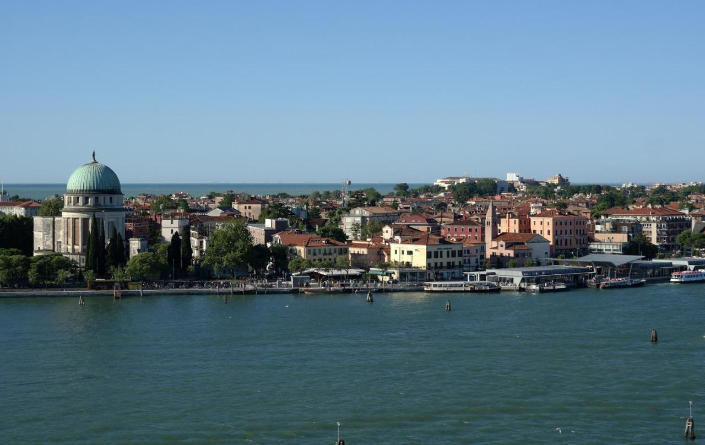
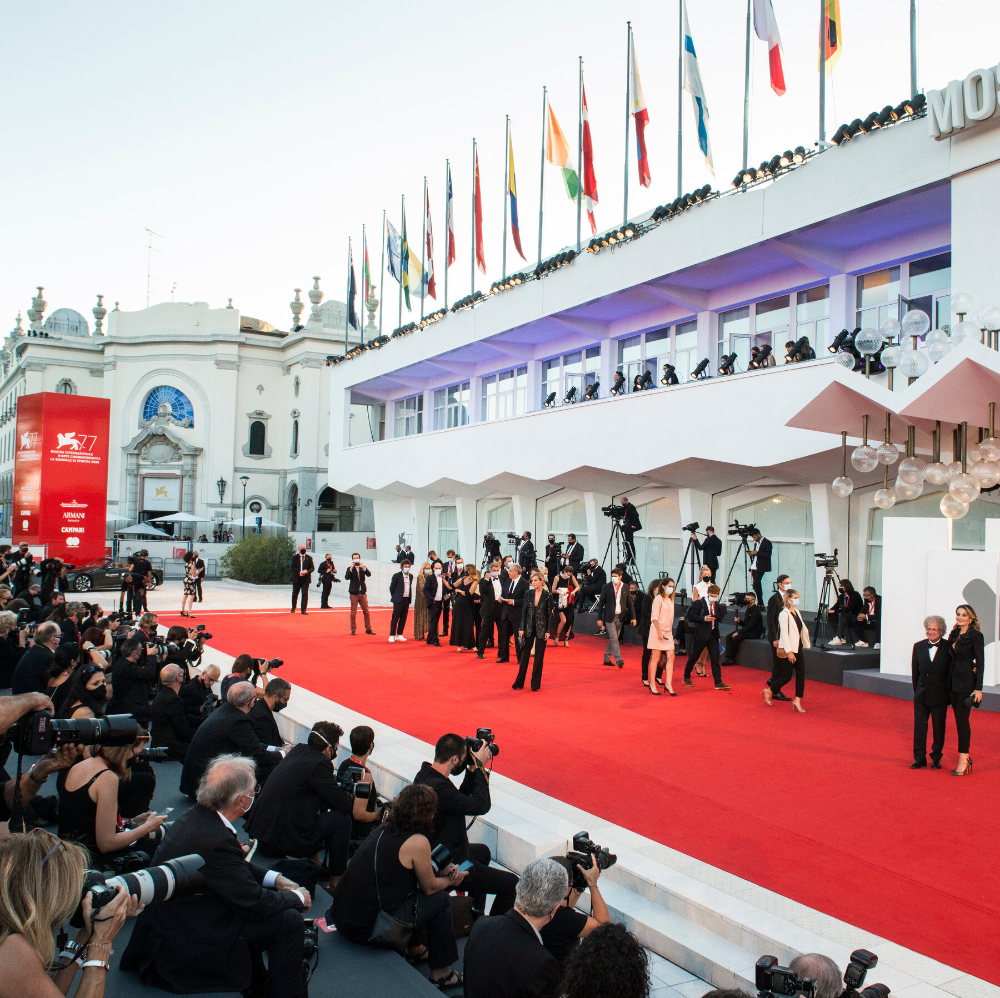
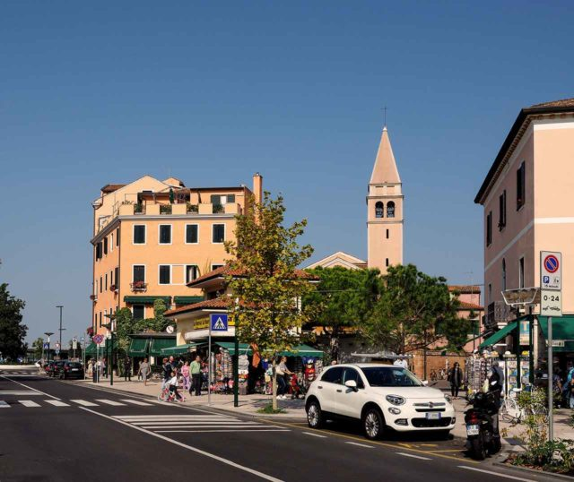

Jeder, der diese Stadt schon einmal besucht hat, wurde ganz sicher in ihren nahezu magischen Bann gezogen. Ein ganz besonders besuchenswertes Plätzchen ist dabei der sogenannte „Lido di Venezia“ dar, also der kleine Inselstreifen mit seinen Stränden und Hotels, der die weltbekannte Lagune von Venedig von dem offenen Meer trennt. Lido ist eine der wenigen Inseln von Venedig, auf der es Straßen, Busse und Autos gibt. Lido di Venezia hat einen langen Sandstrand und ist schon seit Mitte des 19. Jahrhundert ein wichtiger Touristenort. Man erreicht von Lido die Altstadt von Venedig mit den sehr häufigen Fähren in wenigen Minuten. Die Insel Lido gehört politisch zur Stadt Venedig. Sie hat eine enorme Länge von 11 Kilometer in Richtung Nord-Süd, sie ist aber nur wenige hundert Meter breit. Insgesamt hat die Insel eine Größe von nur vier Quadratkilometer.
Lange Zeit war der Lido di Venezia kein besonders beliebtes Ziel für Touristen oder Einheimische. Durch seine Entfernung zum Stadtzentrum hat es damals nur sehr wenige Touristen auf den schmalen Sandstreifen verschlagen und auch die Populationsrate war schwindend gering. Mit der Zeit haben die Menschen jedoch die Besonderheit des interessanten Inselstreifens erkannt und sie zu einem wirklich sehenswerten Ort verwandelt. Heute ist der schöne Sandstreifen allen voran ein beliebter und sehr mondäner Badeort geworden, der tolle Sandstrände zu bieten hat und Urlaubern unweit der weltweit bekannten Stadt etwas Erholung und Ruhe ermöglicht.


Sehr viel los auf Lido ist jedes Jahr, wenn die internationalen Filmfestspiele stattfnden. Sie sind mitten in der Hauptsaison für etwa 10 Tage (meist einige Tage im August und im September). Das wichtigste Gebäude der Filmfestspiele ist der Palazzo del Cinema. Er ist ungefähr 1,5 Kilometer südlich vom Hafen Santa Maria Elisabetta an der Ostseite von Lido in der Nähe des Strands. Die Filmfestspiele sind nur ein Teil einer großen Biennale di Venezia. Es ist ein Fest für Kunst und, im jährlichen Wechsel, für Architektur. Die meisten Veranstaltungen sind nicht auf Lido, sondern im östlichen Teil der Hauptinsel im Stadtteil (Sestiere) Castello. Viele Länder haben einen eigenen, bekannten Pavillon (Deutscher Pavillon, österreichischer Pavillon, schweizer Pavillon usw) mit langer Tradition.
Die Architektur auf dem Lido ist stark von dem venezianischen Baustil geprägt. Neben den sorgsam betriebenen Stränden und Badeorten auf dem Inselstreifen, weisen viele Gewerke auf den Austragungsort der bedeutsamen Filmfestspiele hin, sodass sich die Gestaltung des Orts stark hieran orientiert hat.

Eine wichtiger Bus auf der Insel ist die Stadtbus-Linie 11. Er verbindet den Fährhafen Lido Santa Maria Elisabetta mit dem Süden von Lido und mit der Nachbarinsel Pellestrina. In weniger als einer Stunde kommt man bis in die Stadt Chioggia auf dem Festland im Süden der Lagune. Der Bus fährt tagsüber mindestens alle 30 Minuten. Einzeltickets für Bus und Tram kosten innerhalb Venedig nur 1,50 Euro. Sowohl Lido als auch die Insel Pellestrina gehören zu Venedig. Zwischen Lido und Pellestrina gibt es für einige hundert Meter eine Fähre, dann steigt man wieder in den Bus um. Einige andere wichtige Buslinie ist die Linie A. Sie fährt durch die ganze Insel Insel Lido di Venezia von Nord bis Süd und wieder zurück. Sie verkehrt tagsüber alle 10 Minuten. Die Linie A benutzt südlich des Fähranlegers weitgehend die selben Haltestelle als die Linie 11, die nur alle 30 Minuten abfährt. Will man zur Insel Pellestrina muss man allerdings die Linie 11 nehmen, da die Linie A nicht ganz bis in den Süden von Lido zur Fähre fährt. Die Linie A hält am Hafen Santa Maria Elisabetta an der Wasserseite der Straße, in Richtung Norden auf der anderen Seite der Straße. Die Busse sind oft ziemlich voll, auch zu Corona-Zeiten.